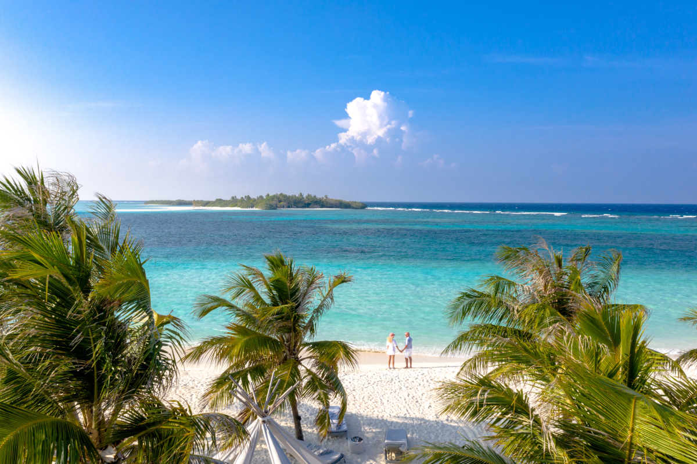
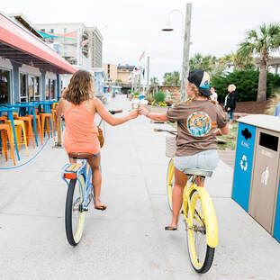

Pleasure Island
Our Mission
The Pleasure Island Chamber of Commerce strives to enhance the quality of life of the residents, stakeholders, and visitors to Pleasure Island and the contiguous community. The Chamber provides the business community with the leadership, advocacy, and representation needed to enhance its membership, their respective businesses, and quality of life while promoting the North Carolina communities of Carolina Beach, Kure Beach, and Fort Fisher.
Visit
Plan your vacation at Pleasure Island, home to some of the most beautiful North Carolina beaches. Enjoy the sand, surf, and our quaint, historic beach towns of Carolina Beach, Kure Beach, and historic Fort Fisher. Come for the day, a weekend getaway, or a long beach vacation. You're sure to discover why the summer never ends on Pleasure Island!
Live & Work
Pleasure Island NC offers a wealth of services from locally owned to international brands. Whether your needs are for wedding planning, finding a beauty salon or gym, or seeking out a home builder, doctor, or repair company, the businesses available through the Pleasure Island Chamber of Commerce member directory serve all these needs and more.
Latest News
For the latest Pleasure Island News, please be sure to follow us on Facebook, Twitter and Instagram.